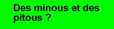

Qui suis-je?
Je m'appelle Nathalie, j'ai 24 ans (née le 7 août 1976)
et je suis, depuis la fin de mes études, travailleuse autonome (lire : traductrice à la pige). J'ai obtenu
un baccalauréat
en traduction au Département des langues modernes et
de traduction à
l'Université du Québec à
Trois-Rivières après avoir obtenu un D.E.C. en lettres au cégep Joliette-de
Lanaudière.
Je viens de Berthier, une petite ville québécoise située sur la rive nord du fleuve St-Laurent et à 45 minutes de route de Montréal, surtout célèbre pour sa pépinière qui contribue au reboisement d'une bonne partie de la province et parce qu'elle est la ville natale de Jacques Villeneuve (ce qui me laisse totalement indifférente, en passant, étant donné que je ne l'ai jamais vu à Berthier). Ma petite soeur Annie, une passionnée des chevaux, y demeure encore. Pour ma part, je suis déménagée à Montréal depuis la mi-juillet 1998 pour aller vivre avec l'homme de ma vie, Daniel Lemire (message adressé aux internautes québécois : non, ce n'est pas l'humoriste. C'est un matheux ainsi qu'un pitonneux à ses heures, car il adore le Java). J'avoue que j'aime bien la vie en ville, même si je viens de la campagne et que mes lilas et autres merveilles de la nature me manque un peu...
| Me voici avec l'homme de ma vie! |
Mes intérêts
J'aime la traduction, naturellement (même si je bougonne parfois lorsque j'ai de gros contrats qui ne me laissent pas une minute à moi). Je m'intéresse à l'espagnol et à l'allemand, mais je ne me considère pas comme une polyglotte... Si j'affirme cela, c'est parce que la question qu'un traducteur se fait le plus souvent poser est : « combien de langues vous parlez? »... Il faut d'ailleurs savoir faire la différence entre la traduction et l'interprétation. La traduction, c'est à l'écrit. L'interprétation, à l'oral.
J'aime aussi beaucoup Tintin et Milou (mon vieil ordinateur porte d'ailleurs le nom de ce dernier... c'est peu dire!). Mon nouvel ordi s'appelle Juliette (et celui de Daniel « Roméo »)... Enfin, nous aurions pu les appeler Haddock et la Castafiore, quand j'y pense... mais c'est moins romantique (dans la mesure où Haddock se sauve toujours de la Castafiore, et je ne voudrais pas que ça donne des idées à Daniel).
Enfin, malgré mon intérêt marqué pour Milou et à l'opposé des goûts de ce dernier, j'adore les chats. Daniel et moi avons adopté, il y a un an, un adorable angora bleu baptisé Yahoo (oui, comme le moteur de recherche) et il a sa propre page dans mon site (cliquez ici pour la visiter). Ce chaton, c'est un vrai petit monstre, comme vous pourrez le constater, qui m'a presque fait regretter d'avoir un faible pour la gent féline chaque fois qu'il m'a planté les crocs dans le bras pour s'affirmer avec vigueur, mais enfin, la crise d'adolescence passée, il dort toute la journée et roucoule tout le temps. Son principal défaut est d'être très obèse, ce qui nous fait un peu honte... En fait, nous attendons la prochaine visite chez le vétérinaire avec peu d'impatience (j'entends déjà le vet : « y'é donc gros, ce chat là »)...
Comment communiquer avec moi
 |
 |
La photo de cette bannière date de novembre 1997 (photo de finissante). |
Me voici le 1er janvier 1999... prête à affronter la dernière année du millénaire. |